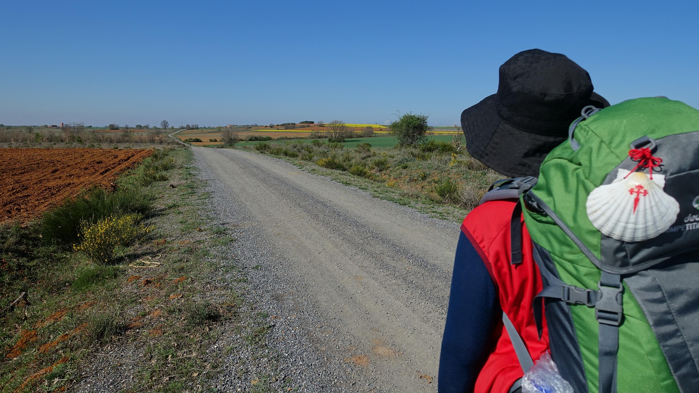

Sara · Easy Camino Santiago
Tu experta en el Camino de Santiago
¿Te llamamos gratis?
Déjanos tu número y te llamamos en menos de 24h para asesorarte sin compromiso.
Tu número solo se usará para llamarte. Sin spam.
Tu experta en el Camino de Santiago
Déjanos tu número y te llamamos en menos de 24h para asesorarte sin compromiso.
Tu número solo se usará para llamarte. Sin spam.

780km de historia, espiritualidad y aventura desde los Pirineos hasta la Catedral de Santiago de Compostela. La ruta más completa y emblemática del Camino.
El Camino Francés es la ruta jacobea más famosa y transitada del mundo. Desde el pequeño pueblo de Saint-Jean-Pied-de-Port, al pie de los Pirineos franceses, hasta la imponente Catedral de Santiago de Compostela, este camino de 780 kilómetros atraviesa paisajes únicos, ciudades históricas y pequeños pueblos que han permanecido casi intactos durante siglos. Cruzar los Pirineos el primer día ya es una experiencia que marca para siempre.
A lo largo de sus 33 etapas oficiales, el Camino Francés pasa por joyas patrimoniales como Pamplona, Logroño, Burgos y León, cada una con su propia catedral, historia y gastronomía. La famosa Meseta castellana, temida y amada a partes iguales, ofrece al peregrino kilómetros de silencio y reflexión bajo cielos interminables. Es aquí donde muchos peregrinos dicen haber encontrado la paz que buscaban.
Desde Easy Camino Santiago organizamos tu Camino Francés completo con una dedicación que solo puede ofrecer quien lo ha vivido. Nos encargamos de todo: alojamientos noche a noche en albergues privados, pensiones o hoteles, el traslado diario de tu mochila de etapa en etapa, tu credencial de peregrino, y un soporte telefónico disponible 24h durante todo el recorrido. Tú solo tienes que caminar y disfrutar. Si prefieres un formato más corto, también organizamos las últimas 100km desde Sarria.


33 etapas de pura emoción. Aquí te mostramos los tramos más emblemáticos.
El mítico cruce de los Pirineos. 25km de ascenso épico por el Col de Lepoeder o la ruta de Valcarlos. Tu primera jornada como peregrino te dará la bienvenida con vistas que no olvidarás jamás.
Tras las calles de los Sanfermines, el Camino atraviesa La Rioja, tierra de vinos y bodegas centenarias. El Alto del Perdón y el viñedo de Irache —donde los peregrinos pueden beber vino gratis de un grifo— son paradas obligadas.
La catedral gótica más impresionante del Camino. Burgos merece al menos medio día libre para perderse por su casco histórico, degustar la morcilla local y visitar el sepulcro del Cid Campeador.
La meditación del peregrino. Kilómetros interminables de trigo y amapolas bajo un cielo enorme. La Meseta divide a los peregrinos: unos la odian, otros la consideran el corazón del Camino. Froilán, Sahagún y Mansilla de las Mulas marcan el camino hacia León.
El ascenso a Galicia. Desde la ciudad de León, con su catedral de vidrieras únicas, el Camino asciende hacia O Cebreiro por las montañas de El Bierzo. Ponferrada, con su castillo templario, y la deliciosa gastronomía berciana hacen este tramo muy especial.
El tramo gallego final. Los eucaliptos, los hórreos y la lluvia fina de Galicia marcan los últimos cinco días. Desde Sarria, el mínimo para la Compostela, el Camino se llena de vida y de peregrinos. La entrada en Santiago y la Plaza del Obradoiro son una emoción indescriptible.
Todo incluido para que tú solo pienses en caminar. Sin sorpresas.
Habitación privada en pensiones y casas de turismo rural
Hoteles y casas rurales con encanto seleccionados en las principales etapas del recorrido
Precios por persona en habitación doble. Suplemento individual disponible. Consulta disponibilidad.
Albergues, pensiones u hoteles reservados y confirmados noche a noche en todo el recorrido.
Recogemos tu mochila cada mañana y la llevamos al siguiente alojamiento. Tú caminas libre y ligero.
Tu pasaporte del Camino, sellada en cada etapa, para obtener la Compostela al llegar a Santiago.
Guía completa etapa a etapa con mapas, distancias, desniveles, puntos de agua y lugares de interés.
Línea de emergencias disponible las 24 horas durante todo el Camino. Nunca estarás solo.
Te ayudamos con todos los trámites para obtener tu Compostela en la Oficina del Peregrino.
Seguro de accidentes y asistencia en viaje incluido en todos los paquetes (según modalidad).
Guías prácticas para planificar cada detalle antes de salir
La lista definitiva: ropa técnica, calzado, botiquín y lo que no necesitas llevar.
Leer más → PresupuestoDesglose real de gastos: alojamiento, comida, transporte y extras. Desde 35€/día.
Leer más → PlanificaciónMayo, junio y septiembre concentran el 60% de peregrinos. Descubre qué mes es mejor para ti.
Leer más →El Camino Francés te espera. Cuéntanos tus fechas y preferencias y te preparamos un presupuesto personalizado sin compromiso.